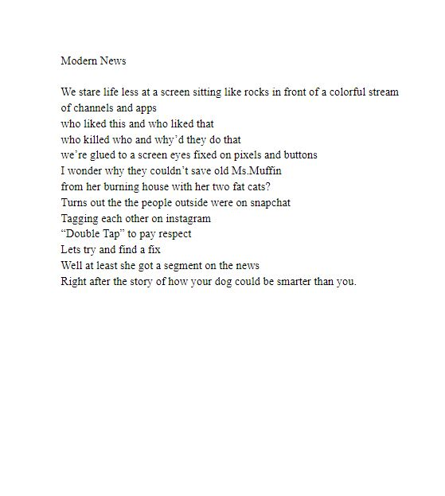
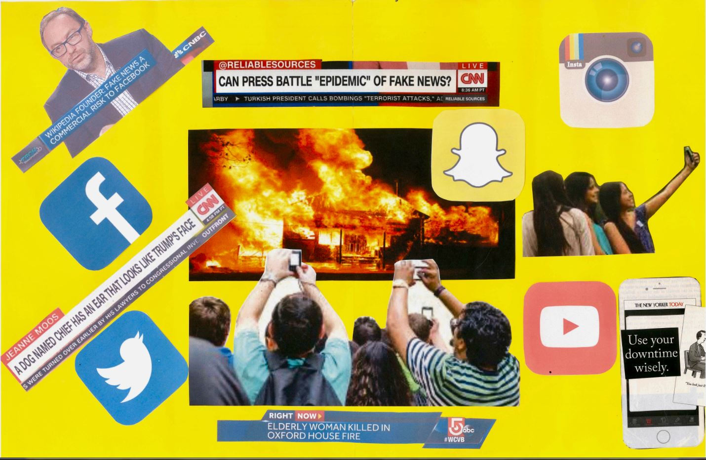
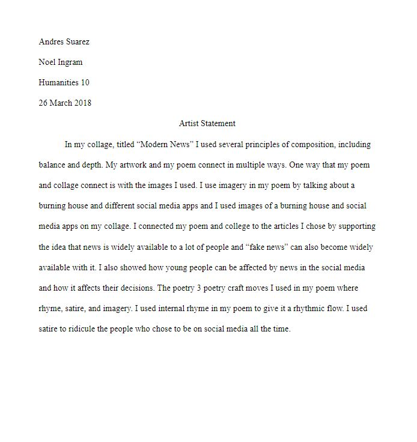
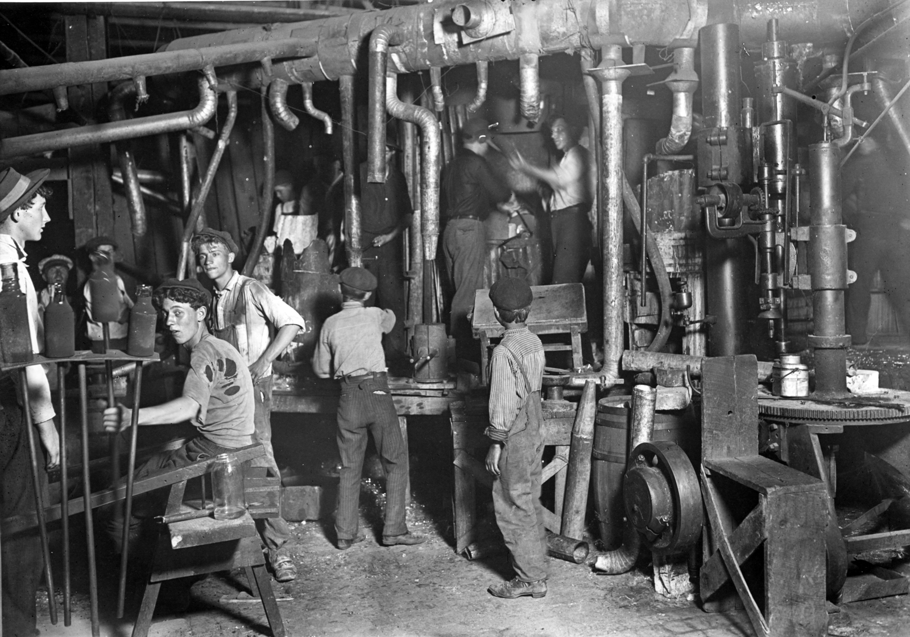
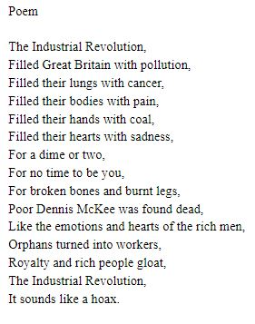
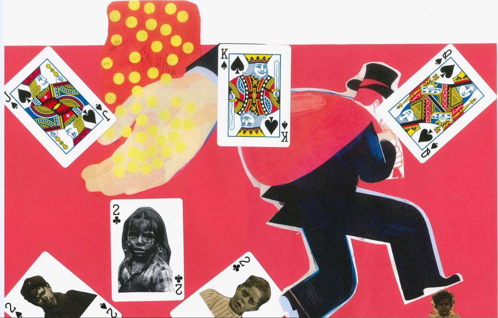
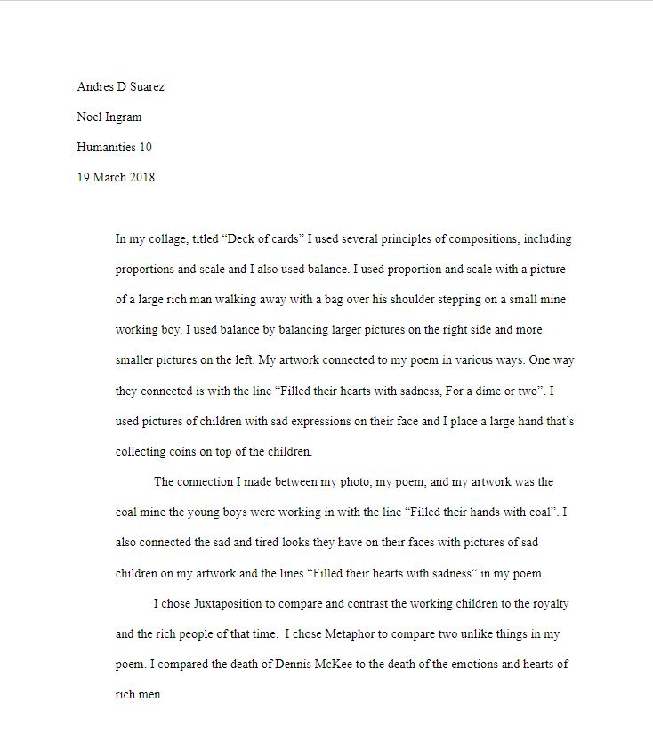

In humanities 10 we created poems and collages based on images and articles of the industrial and social meida. The poem and collage to the right are based on social media and news. The article and poem below that are based on the industrial revolution and the image to the left of the poem.






